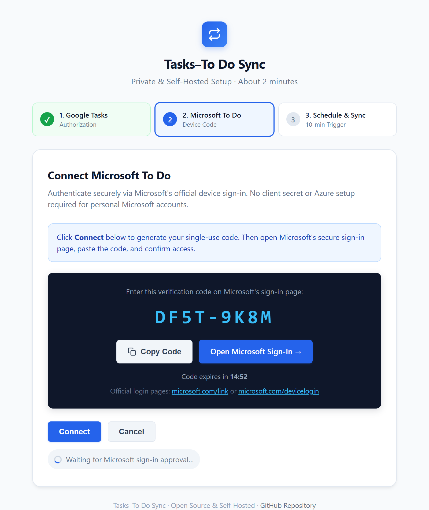

A private, self-hosted bridge that keeps your daily tasks effortlessly in sync across both ecosystems. Capture anywhere, check off anywhere. No third-party sync server, no subscriptions. Runs privately inside your own Google Apps Script project.
✨ One-time setup · Official OAuth sign-ins · Automatic background sync every 10 min
Modern work is divided across ecosystems. We capture action items wherever inspiration hits, but without synchronization, to-dos get scattered and forgotten.
"Hey Google, remind me to buy coffee tomorrow." Captured into Google Tasks, but needed in Microsoft To Do on your work PC? Now fully synced.
Flag an email in Microsoft Outlook to add it to To Do, and it automatically appears in your mobile Google Calendar sidebar Tasks.
Microsoft 365 Copilot generates project to-dos that seamlessly mirror into your personal Google workflow without manual copy-pasting.
Connect through your Microsoft account to iOS Reminders, closing the loop across iPhone, Mac, Android, and Windows PCs.
Not just a one-time create trigger. Title edits, detailed notes, due dates, cross-list moves, and deletions are handled with durable state recovery.
Creating or renaming a task on either platform precisely updates its counterpart without duplicate ghost entries.
Two-way ⇄Check items off or reopen uncompleted work anytime. Statuses settle cleanly without reviving finished tasks.
State Loop ⇄Bi-directional notes sync with clean line breaks and text formatting integrity preserved across both platforms.
Body Sync ⇄Accurate IANA timezone conversion ensures due dates do not shift by a day due to UTC boundary differences.
Timezone Aware ⇄Destination-first move journals safely relocate tasks between categorized lists with state preservation.
List Moves ⇄Two-round confirmation safeguards protect your lists from accidental network-drop wipeouts.
Protected 🛡️Durable tombstones prevent deleted items from resurrecting on subsequent runs as zombie tasks.
No Zombies 👻6-minute Apps Script execution limit guard; auto-saves progress and seamlessly resumes on the next trigger.
Self-Healing ⚙️Trigger-action tools lack state memory. Maintaining two live task databases is a distributed state consistency challenge, not a naive "when this, do that" recipe.
Deploy in minutes: one command creates your private Google project, and the guided web wizard finishes setup in your browser.

Open terminal and run npx tasks-todo-sync init to create your private project.
Open the printed URL, click Deploy → Web app, and open the generated link.
In the wizard, click "Connect" and enter the code at microsoft.com/link.
Click "Activate" in the wizard to start automatic background synchronization!
A concept video illustrating the philosophy of keeping Google Tasks and Microsoft To Do seamlessly connected in one loop.
This video introduces the core philosophy of bridging the gap between Google Tasks and Microsoft To Do. Click the poster to play in-place via YouTube.